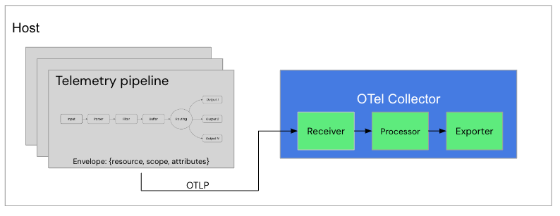

OTel integration - Configuring the collector (k3s)
There are three things to configure when processing telemetry data through an OTel Collector; a
receiver, processor, and exporter as
shown below. On Kubernetes we install the collector with Helm, just like Fluent Bit previously:

OTel integration - Adding the collector chart (k3s)
The OpenTelemetry project publishes a Helm chart for the collector. Add the repository and
refresh your local chart index:
$ helm repo add open-telemetry \
https://open-telemetry.github.io/opentelemetry-helm-charts
$ helm repo update
Hang tight while we grab the latest from your chart repositories...
...Successfully got an update from the "fluent" chart repository
...Successfully got an update from the "open-telemetry" chart repository
Update Complete. ⎈Happy Helming!⎈
OTel integration - Configuring the collector values (k3s)
Create a new Helm values file
workshop-otel-helm.yaml, starting with how the
collector pod itself is deployed. Setting resources is worth doing here: the
chart warns when they are missing, and the collector's built in
memory_limiter sizes itself from them. Without a limit it takes 80% of the
whole node instead of 80% of the pod:
# This file is our workshop OpenTelemetry Helm configuration.
#
mode: deployment
image:
repository: otel/opentelemetry-collector-contrib
resources:
limits:
memory: 256Mi
requests:
cpu: 100m
memory: 128Mi
OTel integration - Configuring the receivers (k3s)
The
receivers section is where we define a delivery destination that Fluent
Bit can push its telemetry (logs) to. Continuing in the same file, expose an OTLP endpoint on
port 4317. The chart ships ports for receivers we don't need, so we switch
those off:
ports:
otlp:
enabled: true
containerPort: 4317
servicePort: 4317
protocol: TCP
appProtocol: http
otlp-http:
enabled: false
jaeger-compact:
enabled: false
jaeger-thrift:
enabled: false
jaeger-grpc:
enabled: false
zipkin:
enabled: false
OTel integration - Configuring the receivers (k3s) cont.
Continuing in the same file, add the
config section. The chart merges this
with its own defaults, so we set the receivers we don't want to null and put
the OTLP receiver on 4317 using HTTP, matching the other paths in this lab:
config:
receivers:
jaeger: null
zipkin: null
prometheus: null
otlp:
protocols:
grpc: null
http:
endpoint: 0.0.0.0:4317
OTel integration - Configuring the exporters (k3s)
Now expand
workshop-otel-helm.yaml with an exporters
section to define where our telemetry (logs) will be sent after processing. In this case we want
output to the pod's console as follows:
config:
receivers:
...
exporters:
debug:
verbosity: basic
OTel integration - Configuring the processing (k3s)
Finally, we add a
service section to complete our collector configuration.
Here we are defining the level of log reporting and creating a collector pipeline for our logs.
We assign specific receivers and exporters, and switch
off the default traces and metrics pipelines as this workshop only deals with logs:
config:
receivers:
...
exporters:
...
service:
telemetry:
logs:
level: debug
pipelines:
traces: null
metrics: null
logs:
receivers: [otlp]
exporters: [debug]
OTel integration - Installing the collector (k3s)
Install the collector into the same
logging namespace as our Fluent Bit
pipeline, from the fluentbit-install-demo root directory. Note we pin the
collector version with image.tag, the same way we pin Fluent Bit, so this
path runs the version used elsewhere in this lab:
$ helm --kube-context rancher-desktop upgrade --install otel-collector \
open-telemetry/opentelemetry-collector \
--set image.tag=0.159.0 \
--namespace logging --create-namespace \
--values workshop-otel-helm.yaml
Release "otel-collector" does not exist. Installing it now.
NAME: otel-collector
NAMESPACE: logging
STATUS: deployed
REVISION: 1
OTel integration - Verifying the collector (k3s)
Check the collector pod is running and note the service that was created. This service name is
how our Fluent Bit pipeline will reach the collector:
$ kubectl --context rancher-desktop -n logging get pods,svc \
-l app.kubernetes.io/name=opentelemetry-collector
NAME READY STATUS RESTARTS AGE
pod/otel-collector-opentelemetry-collector-7bd6ffbbd8-hv46x 1/1 Running 0 22s
NAME TYPE CLUSTER-IP PORT(S) AGE
service/otel-collector-opentelemetry-collector ClusterIP 10.43.215.25 4317/TCP 22s
OTel integration - Console output pipeline (k3s)
We now have both halves running, so let's look at each in turn before connecting them. First the
Fluent Bit pod, still sending its events to its own console only. Note each event carries the
OTel Envelope (
resource, scope,
attributes) we added earlier, which is the shape it needs to be in before it
can be pushed onwards as OTLP (exit with CTRL-C):
$ kubectl --context rancher-desktop -n logging logs -l app.kubernetes.io/name=fluent-bit -f
...
{"date":1785173655.86197,"__internal__":{"group_attributes":{"resource":{},"scope":{}},"log_metadata":{}},"service":"backend","log_entry":"Generating a 200 success code."}
{"date":1785173656.862522,"__internal__":{"group_attributes":{"resource":{},"scope":{}},"log_metadata":{}},"service":"backend","log_entry":"Generating a 200 success code."}
{"date":1785173657.862218,"__internal__":{"group_attributes":{"resource":{},"scope":{}},"log_metadata":{}},"service":"backend","log_entry":"Generating a 200 success code."}
...
OTel integration - Console output collector (k3s)
Now the other half, the collector pod. There are no log events arriving yet, as nothing is
pointed at it, but the highlighted line shows the port is open and receiving on
4317. The resource attributes on every line have been shortened here with
... as Kubernetes adds pod and node details (exit with CTRL-C):
$ kubectl --context rancher-desktop -n logging logs \
-l app.kubernetes.io/name=opentelemetry-collector -f
...
2026-07-27T12:53:15.858Z info service@v0.159.0/service.go:256 Starting otelcol-contrib... {"resource": {...}, "Version": "0.159.0", "NumCPU": 2}
2026-07-27T12:53:15.859Z info extensions/extensions.go:41 Starting extensions... {"resource": {...}}
2026-07-27T12:53:15.859Z info otlpreceiver@v0.159.0/otlp.go:175 Starting HTTP server {"resource": {...}, "otelcol.component.id": "otlp", "otelcol.component.kind": "receiver", "endpoint": "[::]:4317"}
2026-07-27T12:53:15.859Z info service@v0.159.0/service.go:279 Everything is ready. Begin running and processing data. {"resource": {...}}
...
OTel integration - Adding pipeline outputs (k3s)
Now we head back to our Fluent Bit pipeline to add an output destination pushing telemetry data
to the collector endpoint. Add a second entry called
opentelemetry to the
existing outputs section in workshop-fb-helm.yaml. Where the container path
needed the collector's IP address, on Kubernetes we simply use the collector's service name:
pipeline:
inputs:
...
outputs:
# This entry directs all tags to the console (pod stdout).
- name: stdout
match: '*'
format: json_lines
# This entry pushes logs to our OTel collector in the cluster.
- name: opentelemetry
match: '*'
host: otel-collector-opentelemetry-collector.logging.svc.cluster.local
port: 4317
logs_body_key_attributes: true # allows for OTel attribute modification.
OTel integration - Rolling out collector pipeline (k3s)
Apply the updated configuration with another
helm upgrade from the
fluentbit-install-demo root directory, rolling out a new Fluent Bit pod that
pushes to our collector:
$ helm --kube-context rancher-desktop upgrade --install fluent-bit fluent/fluent-bit \
--set image.tag=5.1.1 \
--namespace logging --create-namespace \
--values workshop-fb-helm.yaml
Release "fluent-bit" has been upgraded. Happy Helming!
NAME: fluent-bit
NAMESPACE: logging
STATUS: deployed
REVISION: 11
OTel integration - Console output collector pipeline (k3s)
Back in the Fluent Bit pod console we see the same envelope events as before, but now each one is
followed by a push to the collector service on port 4317 returning an
HTTP status=200. Let's go back to the collector logs and check ingestion
(exit with CTRL-C):
$ kubectl --context rancher-desktop -n logging logs -l app.kubernetes.io/name=fluent-bit -f
...
[2026/07/27 19:16:48.865] [ info] [output:opentelemetry:opentelemetry.1] otel-collector-opentelemetry-collector.logging.svc.cluster.local:4317, HTTP status=200
{"date":1785179808.86274,"__internal__":{"group_attributes":{"resource":{},"scope":{}},"log_metadata":{}},"service":"backend","log_entry":"Generating a 200 success code."}
[2026/07/27 19:16:49.862] [ info] [output:opentelemetry:opentelemetry.1] otel-collector-opentelemetry-collector.logging.svc.cluster.local:4317, HTTP status=200
{"date":1785179809.861942,"__internal__":{"group_attributes":{"resource":{},"scope":{}},"log_metadata":{}},"service":"backend","log_entry":"Generating a 200 success code."}
[2026/07/27 19:16:50.863] [ info] [output:opentelemetry:opentelemetry.1] otel-collector-opentelemetry-collector.logging.svc.cluster.local:4317, HTTP status=200
{"date":1785179810.862751,"__internal__":{"group_attributes":{"resource":{},"scope":{}},"log_metadata":{}},"service":"backend","log_entry":"Generating a 200 success code."}
...
OTel integration - Console output collector (k3s)
The console output from the OTel collector looks something like this, with one line for each log
event sent from our Fluent Bit based pipeline. This means it's working fine! What we don't see
is the log event details, so let's add a new exporter to send our log data to a file (exit with
CTRL-C):
$ kubectl --context rancher-desktop -n logging logs \
-l app.kubernetes.io/name=opentelemetry-collector -f
...
2026-07-27T19:16:55.977Z info Logs {"resource": {"host.name": "lima-rancher-desktop", "k8s.namespace.name": "logging", "k8s.node.ip": "192.168.5.15", "k8s.node.name": "lima-rancher-desktop", "k8s.pod.ip": "10.42.0.83", "k8s.pod.name": "otel-collector-opentelemetry-collector-566464b788-dtb5m", "service.instance.id": "f125652f-cfe2-487d-8afb-6a85b4729d43", "service.name": "otelcol-contrib", "service.version": "0.159.0"}, "otelcol.component.id": "debug", "otelcol.component.kind": "exporter", "otelcol.signal": "logs", "resource logs": 1, "log records": 1}
2026-07-27T19:16:56.497Z debug memorylimiter@v0.159.0/memorylimiter.go:260 Currently used memory. {"resource": {"host.name": "lima-rancher-desktop", "k8s.namespace.name": "logging", "k8s.node.ip": "192.168.5.15", "k8s.node.name": "lima-rancher-desktop", "k8s.pod.ip": "10.42.0.83", "k8s.pod.name": "otel-collector-opentelemetry-collector-566464b788-dtb5m", "service.instance.id": "f125652f-cfe2-487d-8afb-6a85b4729d43", "service.name": "otelcol-contrib", "service.version": "0.159.0"}, "otelcol.component.kind": "processor", "cur_mem_mib": 17}
2026-07-27T19:16:56.979Z info Logs {"resource": {"host.name": "lima-rancher-desktop", "k8s.namespace.name": "logging", "k8s.node.ip": "192.168.5.15", "k8s.node.name": "lima-rancher-desktop", "k8s.pod.ip": "10.42.0.83", "k8s.pod.name": "otel-collector-opentelemetry-collector-566464b788-dtb5m", "service.instance.id": "f125652f-cfe2-487d-8afb-6a85b4729d43", "service.name": "otelcol-contrib", "service.version": "0.159.0"}, "otelcol.component.id": "debug", "otelcol.component.kind": "exporter", "otelcol.signal": "logs", "resource logs": 1, "log records": 1}
...
OTel integration - Configuring collector file exporter (k3s)
Open
Note the highlighted line. Defining an exporter is not enough, it must also be listed in the logs pipeline, so we edit the
workshop-otel-helm.yaml and add a file exporter
writing to /output/output.json. A pod has no local directory to write into,
so we also give it an emptyDir volume.Note the highlighted line. Defining an exporter is not enough, it must also be listed in the logs pipeline, so we edit the
exporters line written earlier, changing it
from [debug]. An exporter that is left out of the pipeline is silently
ignored and no file is ever created:
config:
exporters:
# This exporter writes each log record to a file.
file:
path: /output/output.json
debug:
verbosity: basic
service:
pipelines:
logs:
receivers: [otlp]
exporters: [file, debug]
extraVolumes:
- name: otel-output
emptyDir: {}
extraVolumeMounts:
- name: otel-output
mountPath: /output
OTel integration - Adding a file viewer (k3s)
The collector image is built without a shell, so there is no way to read that file with a
kubectl exec on the collector container itself. Add a small sidecar
container to the same pod, mounting the same volume, purely so we have something to read the
file with. Add this to the end of workshop-otel-helm.yaml:
extraContainers:
- name: output-viewer
image: busybox:1.36
command: ["sh", "-c", "sleep infinity"]
volumeMounts:
- name: otel-output
mountPath: /output
OTel integration - Rolling out file exporter (k3s)
Apply the updated collector configuration with another
helm upgrade, then
check the pod comes back with both containers showing ready (see yellow highlight):
$ helm --kube-context rancher-desktop upgrade --install otel-collector \
open-telemetry/opentelemetry-collector \
--set image.tag=0.159.0 \
--namespace logging --create-namespace \
--values workshop-otel-helm.yaml
Release "otel-collector" has been upgraded. Happy Helming!
REVISION: 2
$ kubectl --context rancher-desktop -n logging get pods \
-l app.kubernetes.io/name=opentelemetry-collector
NAME READY STATUS RESTARTS AGE
otel-collector-opentelemetry-collector-85579cbcc8-8cllg 2/2 Running 0 30s
OTel integration - Verifying the file exporter (k3s)
Before looking for the output file, confirm the file exporter really did make it into the
running logs pipeline. The collector renders our values into a config map, so we can read back
exactly what it is running. Both
file and debug should
be listed. If you see only debug, the exporters line highlighted two slides
back was missed, and no output file will ever appear:
$ kubectl --context rancher-desktop -n logging get cm \
otel-collector-opentelemetry-collector \
-o jsonpath='{.data.relay}' | sed -n '/pipelines:/,/telemetry:/p'
pipelines:
logs:
exporters:
- file
- debug
processors:
- memory_limiter
- batch
receivers:
- otlp
telemetry:
OTel integration - Verifying logs to collector to file (k3s)
Verify that the pipeline with Fluent Bit is ingesting, processing and forwarding logs (pod
console). Check that the collector is receiving these logs (pod console). Finally, verify the
collector is exporting to the
output.json file by reading it through our
sidecar container with -c output-viewer:
# Viewing file output.json through the sidecar.
$ kubectl --context rancher-desktop -n logging exec \
deploy/otel-collector-opentelemetry-collector \
-c output-viewer -- tail -f /output/output.json
...
{"resourceLogs":[{"resource":{},"scopeLogs":[{"scope":{},"logRecords":[{"timeUnixNano":"1785181012862597359","body":{"kvlistValue":{"values":[{"key":"service","value":{"stringValue":"backend"}},{"key":"log_entry","value":{"stringValue":"Generating a 200 success code."}}]}}}]}]}]}
{"resourceLogs":[{"resource":{},"scopeLogs":[{"scope":{},"logRecords":[{"timeUnixNano":"1785181013862288526","body":{"kvlistValue":{"values":[{"key":"service","value":{"stringValue":"backend"}},{"key":"log_entry","value":{"stringValue":"Generating a 200 success code."}}]}}}]}]}]}
{"resourceLogs":[{"resource":{},"scopeLogs":[{"scope":{},"logRecords":[{"timeUnixNano":"1785181014862469693","body":{"kvlistValue":{"values":[{"key":"service","value":{"stringValue":"backend"}},{"key":"log_entry","value":{"stringValue":"Generating a 200 success code."}}]}}}]}]}]}
...
OTel integration - Pretty file output (k3s)
A more visually pleasing view of the JSON can be achieved as follows, piping the output into
jq on your own machine, with each log event presented in structured JSON:
# Viewing structured JSON output using jq.
$ kubectl --context rancher-desktop -n logging exec \
deploy/otel-collector-opentelemetry-collector \
-c output-viewer -- tail -n 1 /output/output.json | jq
{
"resourceLogs": [
{
"resource": {},
"scopeLogs": [
{
"scope": {},
"logRecords": [
{
"timeUnixNano": "1785181085861955935",
"body": {
"kvlistValue": {
"values": [
{
"key": "service",
"value": {
"stringValue": "backend"
}
},
{
"key": "log_entry",
"value": {
"stringValue": "Generating a 200 success code."
}
...
Integration of pipelines with Fluent Bit to OpenTelemetry completed!
Lab completed - Results
# Pipeline with Fluent Bit ingest, processing and output.
$ kubectl --context rancher-desktop -n logging logs -l app.kubernetes.io/name=fluent-bit -f
...
[2026/07/27 19:16:48.865] [ info] [output:opentelemetry:opentelemetry.1] otel-collector-opentelemetry-collector.logging.svc.cluster.local:4317, HTTP status=200
{"date":1785179808.86274,"__internal__":{"group_attributes":{"resource":{},"scope":{}},"log_metadata":{}},"service":"backend","log_entry":"Generating a 200 success code."}
...
# OTel collector ingesting events.
$ kubectl --context rancher-desktop -n logging logs -l app.kubernetes.io/name=opentelemetry-collector -f
...
2026-07-27T19:16:55.977Z info Logs {"resource": {"host.name": "lima-rancher-desktop", "k8s.namespace.name": "logging", "k8s.node.ip": "192.168.5.15", "k8s.node.name": "lima-rancher-desktop", "k8s.pod.ip": "10.42.0.83", "k8s.pod.name": "otel-collector-opentelemetry-collector-566464b788-dtb5m", "service.instance.id": "f125652f-cfe2-487d-8afb-6a85b4729d43", "service.name": "otelcol-contrib", "service.version": "0.159.0"}, "otelcol.component.id": "debug", "otelcol.component.kind": "exporter", "otelcol.signal": "logs", "resource logs": 1, "log records": 1}
...
# Viewing file output.json through the sidecar.
$ kubectl --context rancher-desktop -n logging exec deploy/otel-collector-opentelemetry-collector \
-c output-viewer -- tail -f /output/output.json
...
{"resourceLogs":[{"resource":{},"scopeLogs":[{"scope":{},"logRecords":[{"timeUnixNano":"1785181012862597359","body":{"kvlistValue":{"values":[{"key":"service","value":{"stringValue":"backend"}},{"key":"log_entry","value":{"stringValue":"Generating a 200 success code."}}]}}}]}]}]}
...
Next up, controlling logs on Kubernetes...

Contact - are there any questions?
Eric D. Schabell
Technology Advocate Lead
Contact: @ericschabell {@fosstodon.org) or https://www.schabell.org
Technology Advocate Lead
Contact: @ericschabell {@fosstodon.org) or https://www.schabell.org